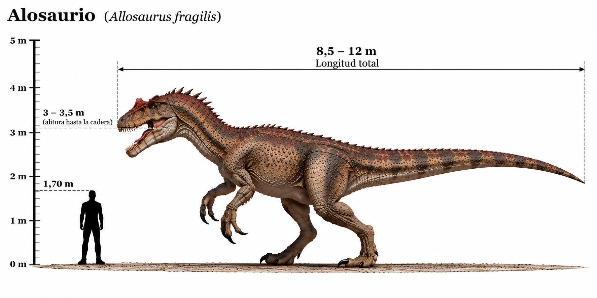

Allosaurus

El Allosaurus fue uno de los principales dinosaurios carnívoros del Jurásico tardío. Vivió hace aproximadamente entre 155 y 145 millones de años, principalmente en lo que actualmente es América del Norte. Era un depredador bípedo que poseía una cabeza grande, mandíbulas con numerosos dientes afilados y extremidades delanteras provistas de tres dedos con grandes garras. Presentaba unas características crestas óseas sobre los ojos y una larga cola que le ayudaba a mantener el equilibrio. Compartió su hábitat con grandes dinosaurios herbívoros como Stegosaurus, Diplodocus y Apatosaurus.
- Grupo: Terópodo.
- Familia: Allosauridae (alosáuridos).
- Período: Jurásico tardío (hace aproximadamente 155–145 millones de años).
- Alimentación: Carnívoro.
- Longitud: Aproximadamente 8–10 metros, aunque algunos ejemplares pudieron ser mayores.
- Altura: Aproximadamente 2,5–3 metros hasta la cadera.
- Localización: América del Norte.
